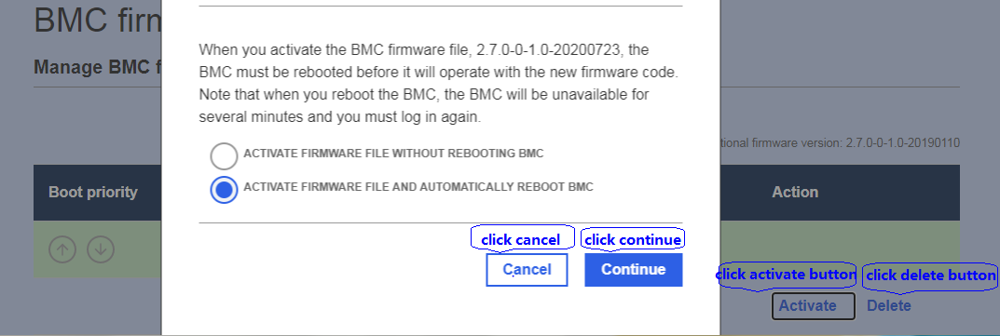
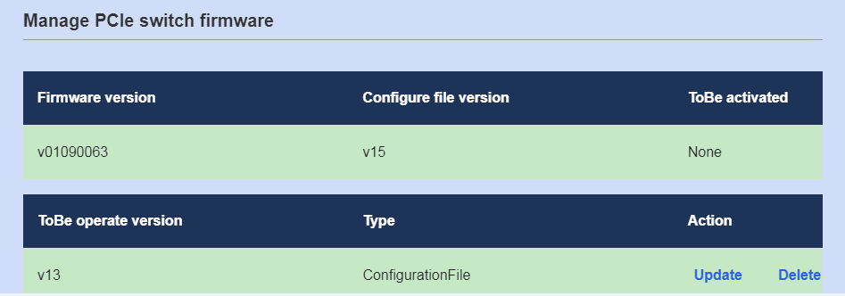
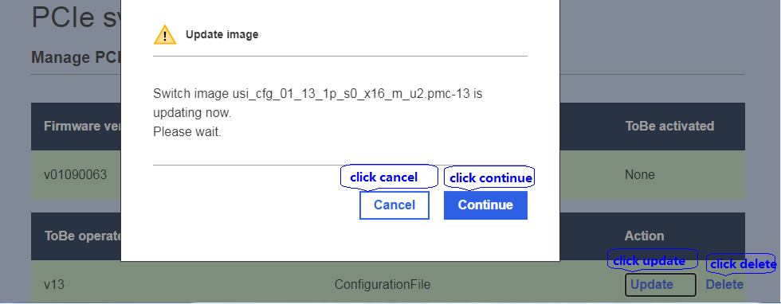
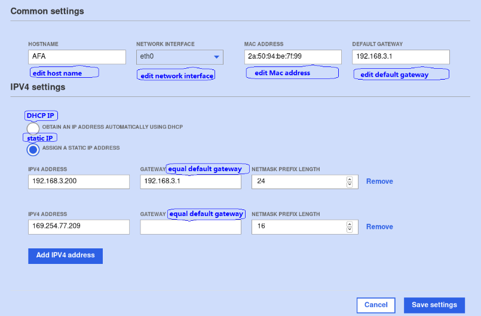
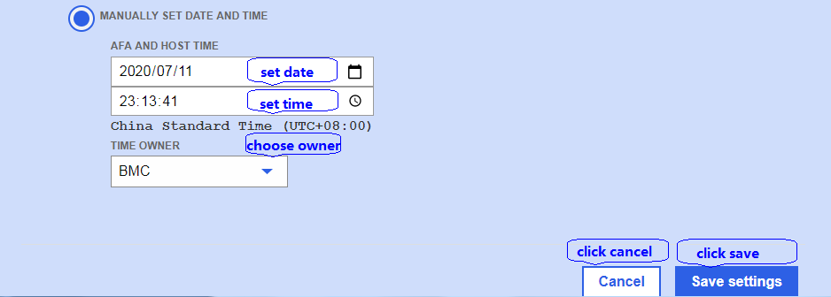
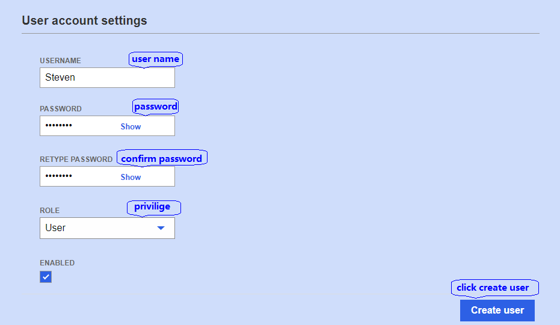

BMC firmware
If user want to update BMC firmware, they should get BMC firmware image first. This page provides two channels
for obtaining image, one is to upload from workstation, and another is to download from TFTP server.
1) upload from workstation: click the choose file button to choose BMC FW image, then click upload firmware button.
2) download from TFTP server: install TFTP server , copy BMC firmware image to it. Input TFTP IP and file name,
then click download firmware button. The image will be downloading.
The result as below figure.

Click “activate” button will pop-up confirm dialogue box. Click “continue” button will activate BMC firmware image.
This operation will last a few minutes, when finish, the new image will functional.
Click “cancel” button will cancel this operation.
PCIe switch firmware
If user want to update PCIe switch firmware, they should get PCIe switch firmware image first.
This page only can upload from workstation.
Click ”choose a file” button to choose PCIe switch firmware image, then click “upload firmware” button.
The result as below figure.


Upgrade PCIe switch firmware need two steps: firstly user should update the image, then activate it.
If user only want to update the image, do not activate it in this time. User can activate it when needed.
Update operation: click “update” button will pop-up confirm dialogue box.
Click “continue” button will update PCIe switch firmware image. This operation will last a few minutes, when finish,
the result as below figure. Click cancel button will cancel this operation.

Activate operation: Click “activate” button will pop-up confirm dialogue box.
Click “continue” button will activate PCIe switch firmware image. This operation will last about one or two minutes,
when finish, the new image will functional. Click “cancel” button will cancel this operation.
Network setting

Common settings: Host name, network interface, Mac address and default gateway can be modify.
IPV4 settings: User can set DHCP IP and static IP, but DHCP IP is default.
If user want to set static IP, they should select static IP option and gateway is same as default gateway.
And click “save setting” button.
Date and time setting

This page shows date and time setting module. Click set date button to set date, click set time button to set time,
click choose owner to choose BMC, host, both or split. Then click save settings button to save date and time.
Account manage

Only root and administrator privilege can access this page. Failed lockin times is unlimited and lockout times is none defaultly.
Root user can set the failed lockin times between 3 to 10, and failed lockin times between 30s to 600s.
This page shows create user function.
Add user name, set password and confirm password, select user privilege, click “create user” button.
The result as below figure.